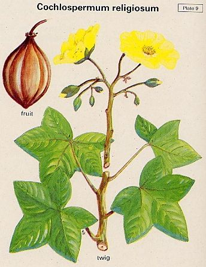

Cochlospermum religiosum
Taxonomic Details

----- Correct Name
-----Family
----- Classification
----- Synonyms
----- Common Names
Other Biological Details
----- Habit and Habitat
----- Diagnostic Features
----- Reproductive Biology
---------- Breeding System
---------- Phenology
---------- Pollinators
---------- Seed Biology
----------Seed germination
----------Cultivation
----- Major Pests and Diseases
Economic Potential and Uses
----- Parts Used
-----Uses
----- Harvesting Practices
----- Produce and Products
----- Chemistry
----- Processing Techniques
----- Other uses
----- Economic Potential to the Country
----- Export Potential
Miscellaneous Information
Literature
Taxonomic
Details
Correct Name: Cochlospermum
religiosum (Linn.)

Family: Cochlospermaceae
Synonyms : C. gossypium DC.
Common Names :
English: Silk Cotton
Hindi:Kumbi, Galgal
Malayalam:Appakutakka
Tamil: Kongilam, Tanakku
Telugu:Kondagogu, Kongu
Kannada: Arasinaburaga, Adaviburaga
Marati: Ganeri, Ganglay
Misc:
Arab: Katira
Back to Top
Other
Biological Details
HABIT & HABITAT :
A genus comprising about 20 species of
tropical trees or shrubs, of which C.religiosum is common in India.
A small or medium sized, deciduous, soft"wooded tree, 8-18 ft. in height
and up to 1 ft. in diam.
The tree occurs all over India from Garhwal Bundelkhand and west sub-Himalayan
tracts to Bengal, Bihar, Orissa, Central India and Deccan peninsula. It is particularly
common in hot dry and stony regions. It is one of the few species capable of withstanding
forest fires and is consi- dered useful in afforestation of bare, rocky and denuded
hills. It is often cultivated in gardens and near temples for its beautiful yellow
flowers.
Availability :
Status :
Back to Top
DIAGNOSTIC
FEATURES
Leaves with palmately 5-lobed leaves, and
large bright yellow flowers in terminal panicles
Back to Top
REPRODUCTIVE
BIOLOGY :
Breeding System :
Phenology :
The flowers appear after leaf fall from December
to April and are appear succeeded by large, pear shaped, capsular fruits, 2-3m
in diameter, ripening in June-July.
Seed Biology :
The seed is small, reniform in shape with a hard
shell. The kernal has a sweetish some what almond-like flavour and slight bitter
taste.
Seed Germination:
Cultivation :
Back to Top
Major Pests and Diseases:
Pests:
Diseases:
Back to Top
Economic
Potential and Uses
Parts used
Tree for gum, Dried leaves and flowers
Uses:
- Seed cake can be used as cattle feed.
Harvesting Practices
Produce and Products
Gum
Back to Top
Chemistry
Analysis of seeds gave the following values: moisture-9.25; ether extract-14.25;
albuminoids-20.94; carbohydrates-35.78; crude fibre-14.63; and ash-5.15%.
The gum from the bark contains over 50% pentoses and galactans and on hydrosysis
with mineral acids yields 14% acetic acid, gondic acid, C23H26O21,
alpha cochlospermic acid, xylose and galactose.
Back to Top
Processing Techniques
Back to Top
Other Uses
- The wood of the tree is sot and light. It is of little value
as timber. The bark of the tree yields a cordage fibre.
- The tree yields a gum which exudes from fibrous, deeply furrowed
bark. The gum is sweetish, cooling, sedative and useful in coughs.
- Dried leaves and flowers are said to be used as stimulant.
- The floss covering the seeds is soft and resilient and csn
be used as a substitute for java kapok ( fron Cieba pentandra) or Indian
kapok (from Salmalia malabarica) for stuffing matresses, pillows and
cushions and for life belts.
- The seed cake left after the ecxtarction of oil contains
albuminoids-21.5; oil-8.1; carbohydrates-39.88; fibre-15.17; and ash-5.45%
and can be used as cattle feed or manure.
Back to Top
Economical
Potential to the country
Back to Top
Export Potential
Back to Top
Miscellaneous
Information
Back to Top
Literature
- The wealth of India, A Dictionary of Indian
Raw Materials and Industrial Products, Vol. II. C, Publications and Information
Directorate, CSIR, New Delhi, India, 1950.
Back to Top